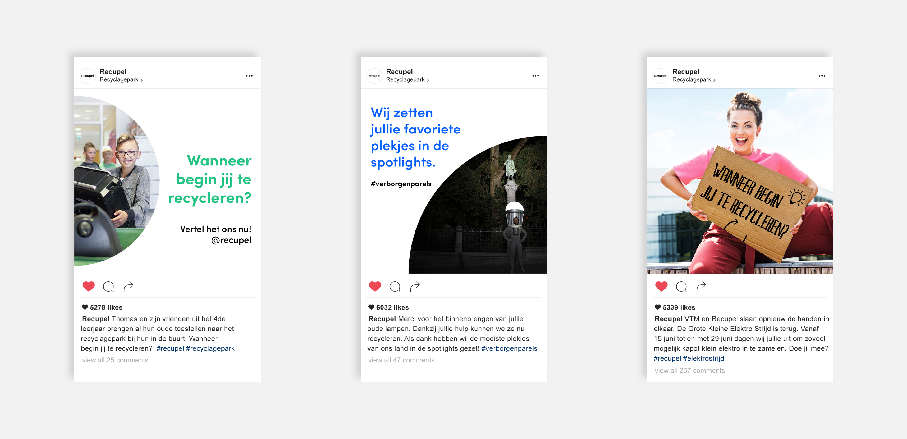
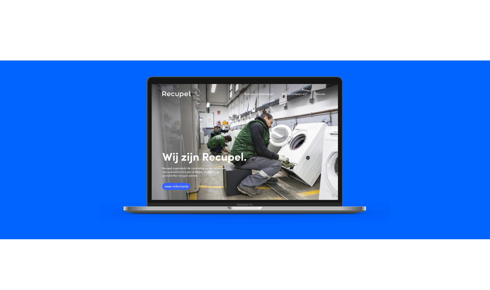

Recupel.
Samen voor een betere wereld.
Wie zijn we
Recupel organiseert in België de inzameling en de verwerking van afgedankte
elektro-apparaten en lampen. Wie een
elektr(on)isch apparaat op de Belgische markt brengt, is bij wet
verplicht om ook de inzameling en de verwerking van de afgedankte toestellen op zich te nemen.


Recupel wil de burger sensibiliseren omtrent urban mining en depollutie. In de toekomst wil Recupel volledig overschakelen naar de circulaire economie. Ze zijn op dit vlak namelijk pionier in Europa.



In het kader van een circulaire maatschappij streeft Recupel naar een betere leefwereld door optimale recuperatie van
materialen uit afgedankte
elektro-apparaten in opdracht van de producenten.


